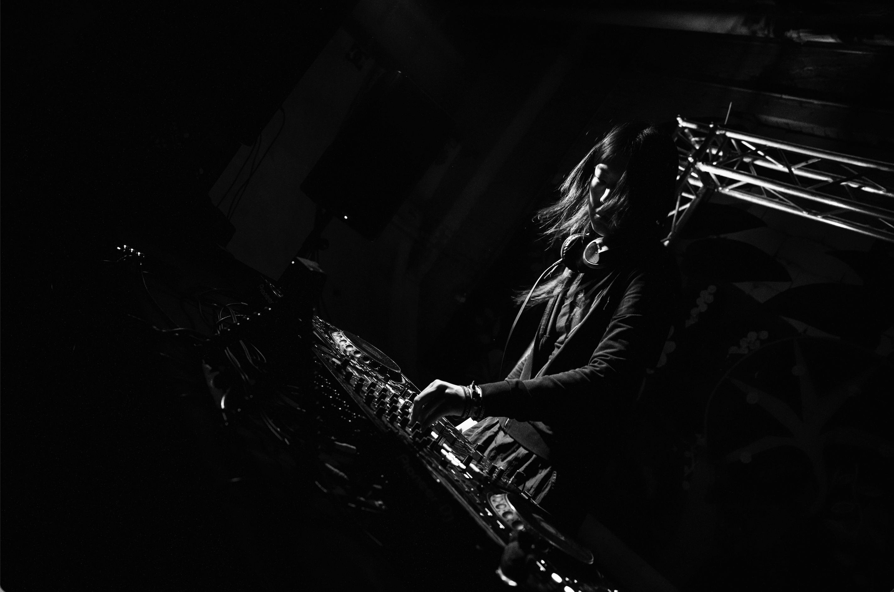
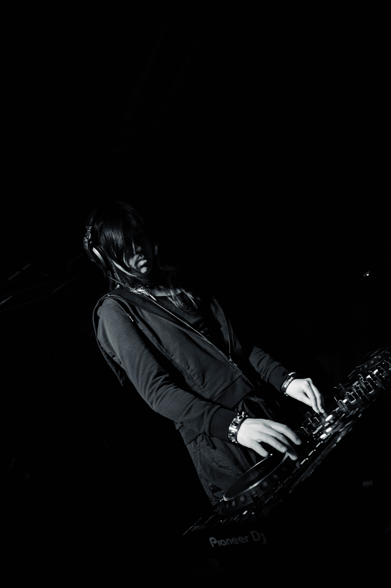
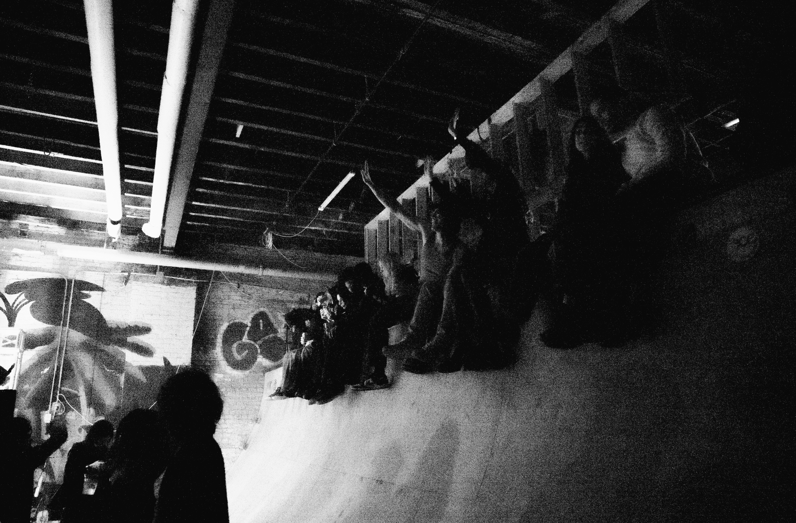

m i m i: I'm probably pretty introverted, even though being a DJ seems like such an extroverted practice.
MixsetSeptember 15, 2025
This interview introduces us to m i m i and explores their plans to interview their friends about New York's underground scene. The interview will be part of a website for my music duo, Hotel Chez, inspired by S4LEM and Fucking Awesome.
Interview: Mikah Kwon
Talent: m i m i Hong
Photography: Adham Bahauddin & Mikah Kwon
When did music first become something important in their life?
Definitely when I was young. I remember getting my first CDs as an elementary schooler, and then in middle school really expanding my taste when I was allowed to start going online.
What drew them into nightlife or DJ culture in the first place?
I always wanted to move to a big city to attend concerts, and naturally became drawn to club parties when I realized how much of a community they were, in addition to the music being so freeing.
How would they describe what nightlife in New York feels like right now?
It feels like we’re at a bit of a breaking point - so many venues have closed or gone under in the last year or two, it’s just so hard to run a successful space in a city that’s so expensive. But the people will always want to party, and the love of events will always keep finding creative ways to keep going.


What makes a dance floor feel alive to them?
When the crowd is actually engaged with the set - not just listening, but paying attention and visibly excited for what will happen next.
What moment during a set stayed with them even after the night ended?
In Tokyo last year, I played a show with a friend I had only known online. I got to see him DJ in person for the first time ever - his energy is unbeatable and his technical skill is amazing. I left that set wanting to improve myself to try and aspire to even be as partially impressive as him.
Do they feel like a different version of themself when they're DJing
Definitely, I think stage persona is absolutely a thing. Not completely different from how I am in regular life, but it demands more confidence and calm even if it is just for showmanship.
"I def think stage persona is absolutely a thing"

What do people not see when they watch them perform?
Probably not all of the anxiety and prep that goes into a set - I’m getting a lot better, but the moments between an event starting and the time I play can be super stressful for me.
How do they feel when everything ends and it gets quiet again?
Intense relief that the night is over, a lot of lingering excitement and gratitude that I get to DJ for people and that people listen to my sets.
How do they feel nightlife in New York has changed over time?
It’s definitely gotten harder I think to become a DJ, I know that’s always the case but especially now - momentum is so hard to maintain, and even more so when there’s no promise that people will care about you tomorrow or even next week because trends move so fast.
What do they think we’ve lost in the current scene?
DIY has gotten a lot more challenging because we’ve lost a lot of venues, and it’s much harder to find open decks or spaces that foster ways for people starting out to practice and meet. But maybe I’m tapped out and that still exists if you’re looking.
What do they think we’ve gained?
I think we’re always gaining new people who love music, and want to come out to parties and support the nightlife. There’s an infinite flux of talented amazing people who move here and bring their vibes and ideas.
If they imagine nightlife in New York ten years from now, what will it look like?
I hope that it stays ahead of the curve, we’re so lucky that New York is a major hub in that way. I hope that musicians and artists stay weird, and that we don’t give in to the blandification of the culture.
Do they think it’s getting harder or easier to create meaningful spaces right now?
I think it’s easier in theory, but harder in practice - easier because the climate of things necessitates community to keep us sane, and harder because of the same reasons.
What keeps them connected to this world even when things feel unstable?
My friends that I do this with, and others who keep playing amazing music. The idea that there are so many talented people out there being creative keeps me going, even when things are uncertain.
If someone really understood them beyond the music, what would they notice first?
I'm probably pretty introverted, even though being a DJ seems like such an extroverted practice.